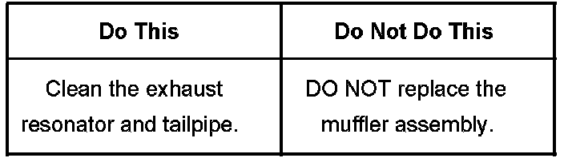
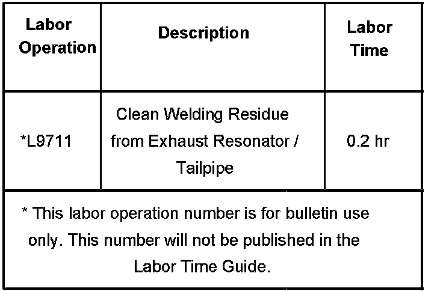

Exhaust System - Residue On Exhaust Resonator
Bulletin No.: 06-06-05-005Date: September 12, 2006
TECHNICAL
Subject:
Residue on Exhaust Resonator and/or Tailpipe (Clean Off Welding Residue with Brake Cleaner)
Models:
2007 Cadillac Escalade Models
2007 Chevrolet Avalanche, Suburban, Tahoe
2007 GMC Denali Models, Yukon Models

Condition
Some customers may comment that the rear exhaust resonator and/or tailpipe appears to be rusted.
Cause
A form of welding residue is left behind on the exhaust system after the tailpipe and/or the exhaust tip has been welded.
Correction
In order to avoid being burned, do not clean the exhaust system while it is hot. Clean the exhaust system when it is cool.
Wet a shop cloth with GM Brake Cleaner, P/N 12378392 (in Canada, 88901247) or equivalent, and wipe off any excess welding residue around the exhaust resonator and/or the tailpipe.
Warranty Information

For vehicles repaired under warranty, use the table.

Disclaimer